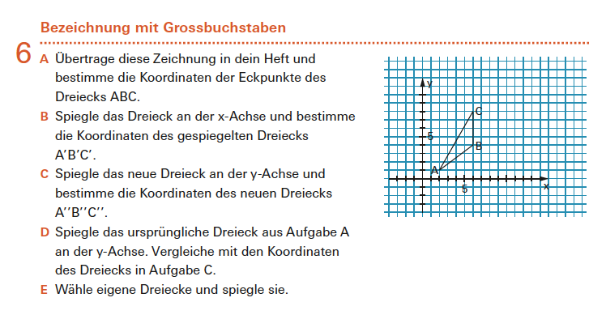

6 Punkte
Die abgebildete Aufgabe stammt aus der Lernumgebung «Koordinaten» aus dem Mathbuch 1.

(a) Was ist das Ziel dieser Aufgabe? Welche Handlungsaspekte des Lehrplan 21 stehen hier im Vordergrund? (mit Begründung!)
Das Ziel der Aufgabe ist, dass die SuS erkennen, wie sich Achsenspiegelungen an der $x$- und $y$-Achse auf die Koordinaten von Punkten auswirken. Konkret ändert sich bei der Spiegelung an der $x$-Achse nur das Vorzeichen der $y$-Koordinate, bei der Spiegelung an der $y$-Achse nur das Vorzeichen der $x$-Koordinate. Diese Erkenntnis wird dadurch gefördert, dass über die einzelnen Aufgabenteile hinweg Spiegelungen von Punkten an $x$- und $y$-Achse von Punkten aus allen Quadranten durchgeführt werden. Im Idealfall können Achsenspiegelungen an $x$- und $y$-Achse am Ende der Aufgabe mit Hilfe von Koordinatentransformation durchgeführt werden.
Zum Erreichen dieses Ziels wird von den SuS verlangt, dass sie einerseits wiederholt Punkte im Koordinatensystem eintragen und eingetragene Punkte ablesen und andererseits Achsenspiegelungen geometrisch mit Zirkel und Lineal durchführen. Damit folgt die Aufgabe dem Leitspruch «Übend entdecken, entdeckend üben». Als weiteres Ziel der Aufgabe kann damit das Üben und Vertiefen von Koordinatenbestimmung und Durchführen von Achsenspiegelung angesehen werden.
Es werden alle drei Handlungsaspekte in der Aufgabe angesprochen, wobei die ersten zwei im Vordergrund stehen:
Operieren und Benennen: In der Aufgabe müssen die SuS einerseits Koordinaten von Punkten ablesen und andererseits Achsenspiegelungen mit Zirkel und Lineal durchführen. Beides setzt voraus, dass sie die damit verbundenen Konzepte kennen und konkret umsetzen können. Der Schwerpunkt liegt hier dabei auf dem Operieren.
Erforschen und Argumentieren: Die SuS werden in Aufgabenteil D dazu aufgefordert, die jeweils erzeugten Koordinaten miteinander zu vergleichen und in Aufgabenteil E anhand eigener Beispiele zu überprüfen, ob diese Erkenntnisse sich auf andere Dreiecke übertragen lassen. Das Erforschen steht hier im Vordergrund. Die Begründung der Ergebnisse wird in der Aufgabe selbst nicht eingefordert.
Darstellen und Mathematisieren: Wir haben es mit keiner Alltagssituation zu tun, die mathematisiert wird. Allerdings bietet das Koordinatensystem eine besondere Art und Weise, Punkte in der Ebene zu beschreiben und damit darzustellen. Auch bereits die Formulierung der Erkenntnisse kann hier niederschwellig dem Darstellen zugeordnet werden.
(b) Erläutern Sie präzise, was fachdidaktisch unter dem operativen Prinzip verstanden wird, und untersuchen Sie, ob die vorliegende Aufgabe dieses Prinzip nutzt. Inwiefern trägt in dieser Aufgabe dieses Prinzip zu einem verstehensorientierten Umgang mit dem mathematischen Gegenstand bei?
Das operative Prinzip soll dabei helfen, (mathematische) Objekte zu erfassen. Dabei soll erforscht werden, wie diese konstruiert sind und wie sie sich verhalten, wenn Operationen auf sie wirken. Es gliedert sich in drei Teile. Es gilt zu
- untersuchen, welche Operationen ausführbar und wie sie miteinander verknüpft sind,
- herausfinden, welche Eigenschaften und Beziehungen den Objekten durch Konstruktion aufgeprägt werden,
- beobachten, welche Wirkungen Operationen auf Eigenschaften und Beziehungen der Objekte haben (Was geschieht mit …, wenn …?).
In dieser Aufgabe sind die zu untersuchenden Objekte die durch Koordinaten beschriebenen Punkte in der Ebene. Die Operationen, die hier jeweils angewendet werden, sind die Achsenspiegelungen an der $x$- und $y$-Achse. Die SuS sollen herausfinden, welche Wirkung die Achsenspiegelung auf die Koordinaten der Punkte hat. Dabei wird insbesondere die dritte Ebene des Prinzips angesprochen (Was passiert mit den Koordinaten, wenn ich einen Punkt an einer Achse spiegele?).
Dabei wird in der Aufgabe insbesondere darauf geachtet, dass bereits in Aufgabenteil A–D die Operation auf Punkte in unterschiedlichen Quadranten ausgeführt wird und in Aufgabenteil E weitere unterschiedliche Dreiecke untersucht werden.
Neben dem kartesischen Koordinatensystem, welches in der Schule eingeführt wird, gibt es auch das Polarkoordinatensystem.
(c) Beschreiben Sie mathematisch präzise, wie Koordinaten in diesem System angegeben werden und wie die Umrechnung von kartesischen Koordinaten $(x;y)$ in Polarkoordinaten $(\varphi;r)$ funktioniert.
Sie dürfen bei Bedarf die Umrechnung am Beispiel $A(2;1)$ durchführen.
Ein Polarkoordinatensystem besteht aus einem festen Punkt $O$, dem Zentrum, sowie einer von diesem Punkt ausgehenden Halbgeraden. Auf dieser Achse können (wie auf dem Zahlenstrahl) entsprechende Längen abgetragen bzw. gemessen werden.
Ein beliebiger Punkt $P$ der Ebene lässt sich dann eindeutig durch Angabe folgender Koordinaten festlegen:
- den (positiven) Abstand $r$ des Punktes $P$ vom Zentrum;
- den Winkel $\varphi$, um den der Zahlenstrahl im mathematisch positiven Sinne gedreht werden muss, damit er durch $P$ geht (oder anders: den Winkel, den die Halbgerade mit dem Strahl $OP$ einschliesst).
Für die Umrechnung von kartesischen Koordinaten in Polarkoordinaten bietet es sich an, das Zentrum als Schnittpunkt der $x$- und $y$-Achse und die Halbgerade als den positiven Teil der $x$-Achse zu wählen.
Ein Punkt $(x;y)$ in kartesischen Koordinaten lässt sich dann folgendermassen in Polarkoordinaten umrechnen:
- $r=\sqrt{x^2+y^2}$
- $\varphi=\arctan\left(\frac{y}{x}\right)$ (Der Taschenrechner gibt dabei nur Ergebnisse im ersten und vierten Quadranten an. Befindet sich der Punkt im zweiten oder dritten Quadranten, muss zu dem Ergebnis jeweils noch $180^\circ$ hinzuaddiert werden.)